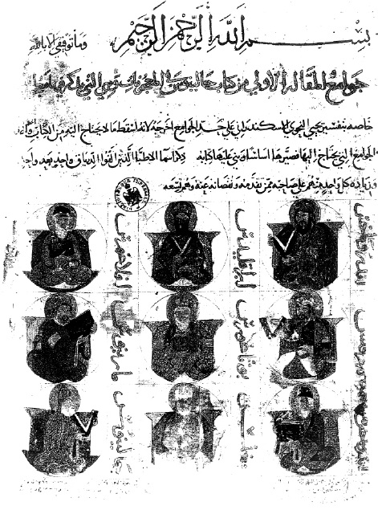

ŞEKİL 48. İoannes Grammatikos Philoponos’a yakıştırılan ve Galenos’un eserlerine dayalı olan Kitab el-Tiryak adlı Arapça elyazmasının en eski ikinci nüshasından, Eskiçağ’ın tiryak hazırlayan dokuz Yunan hekiminin portreleri: 1. sıra: Andromakhos – Pherekydes - Pylagoras; 2. sıra: Perikles – Pythagoras - Marinus; 3. sıra: Genç Andromakhos – Magnus - Galenos (Irak, 13. yüzyıl ikinci yarısı) (Die Österreichische Nationalbibliothek, Viyana).26, 87, 115